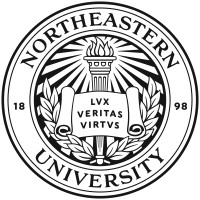

Education
Northeastern University
Master of Science in Computer Science
Courseworks: Object-Oriented Design, Data Structures, Algorithms, Comnputer Networking, Database Management, Distributed System, Mobile Development, Web Development
Shanghai Jiao Tong University
Bachelor of Engineering in Nuclear Engineering and Technology
Work Experience
Software Engineer Intern
- Worked in an agile environment, collaborating with engineers, product and design teams to create better user experience for LinkedIn Flagship used by over 200 million users
- Followed a MVVM design pattern, designed common render models that supported Jetpack Navigation, LiveData and ViewModel for a library of next-generation UI components
- Utilized Kotlin and Jetpack Compose to remodel XML based UI components for Android platform used by 100+ developers, resulting in a 20% lines of code reduction and 20% faster incremental builds

Northeastern University
Teaching Assistant for Discrete Structures
- Conducted weekly office hours to provide guidance for students in solving complex problems related to topics such as sets, logic, and graph theory
- Assisted a diverse group of over 50 students, tracking their progress, grading assignments and quizzes, and offering personalized feedback to improve their performance